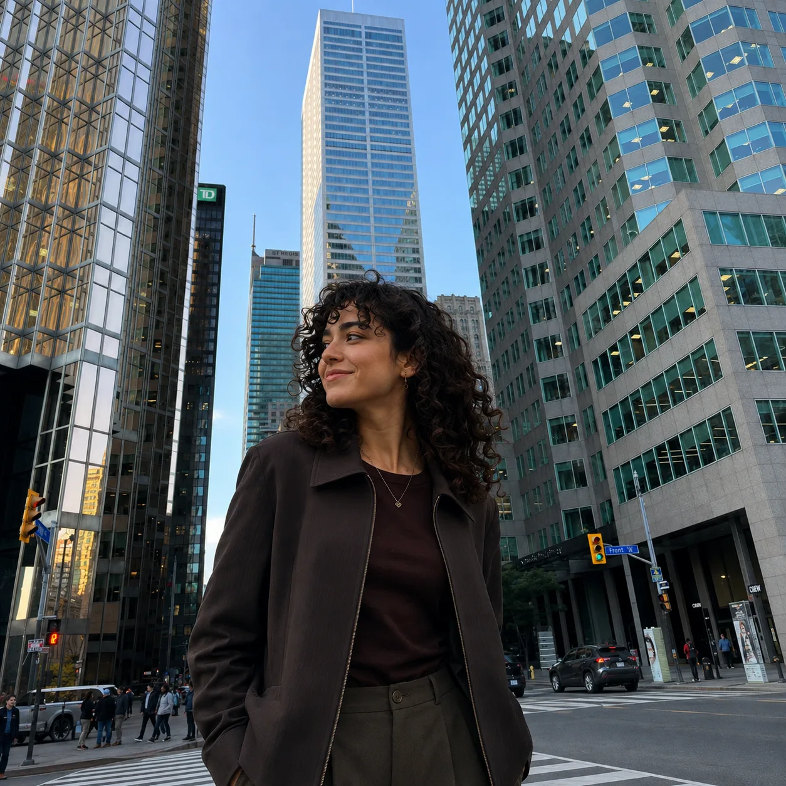

Expertise
What you are genuinely good at.
Personal Brand Content
What you are genuinely good at.
What you have to offer the people and communities you want to reach.
Why this matters and what you want it to achieve.
Beliefs that guide the position you choose to present.
Personal Brand Content is not about exposing your private life.
You choose what to make public.
Location, people, and activity are not decoration.
They are part of the communication itself.

2026 Municipal Campaign · London, Ontario
In London’s 2026 municipal election, I joined the Mustafa Zebuun for Mayor campaign at an early stage.
My work focuses on filming, editing, and turning campaign topics into clear visual stories for social media — from transit and downtown issues to housing, homelessness, and support for local business.
Filming. Editing. Short-form storytelling.
Official campaign ↗Metrics as of August 21, 2026.
Vacant commercial spaces, downtown renewal, and putting underused properties back into local circulation.
Watch on Instagram ↗Bus frequency, transfers, safer stops, and practical ways to make London’s transit network easier to use. My first video for the campaign.
Watch on Instagram ↗A campaign message about supporting local businesses — and the launch of the idea that later became Forest City Spotlight.
Watch on Instagram ↗A four-minute social video on prevention, shelters, supportive housing, and pathways toward housing stability — a deliberately longer format that still reached a strong audience.
Watch on Instagram ↗